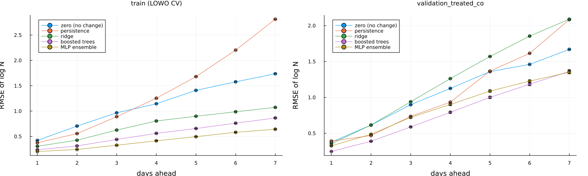

Target is Δlog N over one day. Features: logN, dprev, dose, exposure, line_R, low_resource, s_frac, seeding, coculture, log_well. No clock-time features: day, since_switch (time since the last dose change) and cumdose (∫dose dt = dose × day under a constant dose, a treatment clock) were removed on 2026-10-07; the dose history enters only through the filtered exposure v (dv/dt = 0.24(u − v)), a saturating state of the input. A row needs measured counts on days t−1, t and t+1 (day 0 is a nominal seeding, not a measurement). Training wells are scored by leave-one-well-out CV; validation wells (ce1 treated co-culture) by models fit on all training wells. Rollouts feed predictions back in for up to 7 days (co-culture partners jointly). Runtime: 5.0 min.
| model | split | rmse | rmse_sd_over_seeds | mae | seeds | n |
|---|---|---|---|---|---|---|
| zero (no change) | train (LOWO CV) | 0.4217 | 0 | 0.3277 | 1 | 528 |
| zero (no change) | validation_treated_co | 0.3768 | 0 | 0.3296 | 1 | 128 |
| persistence | train (LOWO CV) | 0.3735 | 0 | 0.2762 | 1 | 528 |
| persistence | validation_treated_co | 0.391 | 0 | 0.3009 | 1 | 128 |
| ridge | train (LOWO CV) | 0.3058 | 0 | 0.2307 | 1 | 528 |
| ridge | validation_treated_co | 0.3556 | 0 | 0.2795 | 1 | 128 |
| boosted trees | train (LOWO CV) | 0.2377 | 0.00077 | 0.1699 | 5 | 528 |
| boosted trees | validation_treated_co | 0.2466 | 0.00127 | 0.1957 | 5 | 128 |
| MLP ensemble | train (LOWO CV) | 0.2025 | 0.0007347 | 0.1426 | 5 | 528 |
| MLP ensemble | validation_treated_co | 0.3303 | 0.004875 | 0.2686 | 5 | 128 |

| model | split | h1 | h3 | h7 |
|---|---|---|---|---|
| zero (no change) | train (LOWO CV) | 0.4214 | 0.9657 | 1.737 |
| zero (no change) | validation_treated_co | 0.3778 | 0.898 | 1.669 |
| persistence | train (LOWO CV) | 0.3746 | 0.8893 | 2.813 |
| persistence | validation_treated_co | 0.3914 | 0.7354 | 2.084 |
| ridge | train (LOWO CV) | 0.3056 | 0.6249 | 1.073 |
| ridge | validation_treated_co | 0.3553 | 0.9387 | 2.09 |
| boosted trees | train (LOWO CV) | 0.2372 | 0.44 | 0.8642 |
| boosted trees | validation_treated_co | 0.2467 | 0.5884 | 1.363 |
| MLP ensemble | train (LOWO CV) | 0.2018 | 0.326 | 0.642 |
| MLP ensemble | validation_treated_co | 0.3255 | 0.7215 | 1.351 |